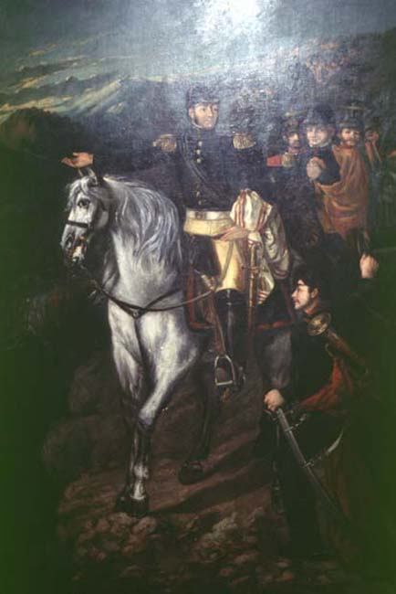

|
Founding Fathers
|
|  |
| Martín L. Boneo, San Martín en los Andes |
One of Carranza´s main concerns was to inculcate a veneration for the nation's 'great men' among visitors of his institution. To this end, the museum collected numerous portraits of the 'Liberator', copies of which it distributed among schools and town halls across the country. Also for use in public education, an illustrated journal, La Ilustración Histórica, was edited. Even though (or because) its contents remained limited, the museum did not contend itself with the mere exhibition of history, but also assumed the mission of producing and distributing a standardised and univocal image of national history to the most remote confines of the state.
Historical research and writing, previously the domain of journals such as the Revista de Buenos Aires (1863-71), the Revista del Río de La Plata (1871-77), the Revista Argentina (1868-72) and various others, flourished in the 1880s and 1890s in the form of monographies and books, foremost among which Mitre´s Historia de Belgrano (1876-77) and Historia de San Martín (1887-90). Further publications included Adolfo Saldías´s Historia de Rosas y su época (1888, republished in 1892 as Historia de la Confederación Argentina), Francisco Ramos Mejía´s El federalismo argentino (1887), Joaquín V. González´s La tradición nacional (1888), Pastor Obligado´s Tradiciones de Buenos Aires (1888), Samuel Lafone Quevedo´s Londres y Catamarca (1888) and the ten volumes of Vicente Fidel López´s Historia de la República Argentina (1883-93), followed by Compendio de historia argentina (1889-90) and La gran semana de 1810 (1896). Histories of provinces and cities also flourished. One of the relays of this revision of post-independence history was the Revista Nacional, founded and edited by Adolfo P. Carranza from 1882 until his assumption of the National HIstorical Museum´s directorship in 1889. (258) On its pages, a written pantheon of national heroes was assembled, who were regularly invoked in sections dedicated to centenaries and funerals, as well as those commemorating the 'Muertos Ilustres', 'Grandes Ciudadanos' and, last not least, 'Próceres Olvidados'. The journal was especially fond of rescuing independence heroes who had lived in humble conditions ever after, so as to emphasize the 'purity of spirit' of the founders of the nation.
'Mientras enterramos a los últimos veteranos de la Independencia se acercan los cien años del nacimiento de otros varones ilustres, de otros guerreros [...] Es decir, nos despedimos con amargura de los que se van y saludamos con alborozo las fechas clásicas de los que se fueron' (Adolfo P. Carranza, 'Centenario de Mansilla', Revista Nacional 8 (1889): 92).